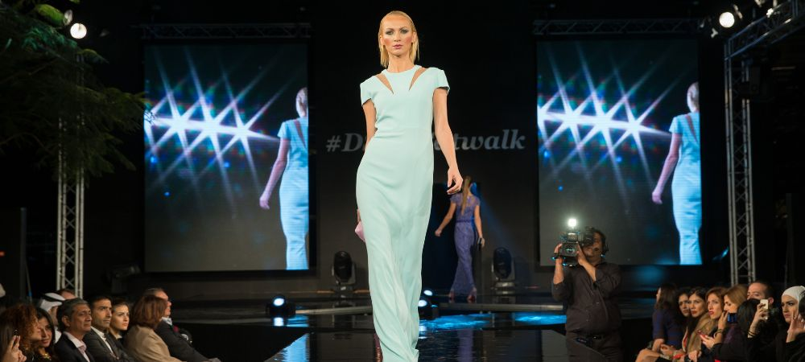

News
Fashion Marketing
Fashion Marketing
Digital marketing strategies in fashion industry
Branding and positioning in fashion marketing
Consumer behavior analysis in fashion marketing
Social media influence on fashion marketing
Trends forecasting in fashion marketing
Fashion Merchandising
Fashion Merchandising
Retail merchandising strategies in the fashion industry
Visual merchandising techniques for fashion products
Inventory management in the fashion retail sector
Pricing strategies for fashion merchandise
Store layout and design for effective merchandising
Fashion Advertising
Fashion Advertising
Print advertising campaigns in the fashion industry
Influencer collaborations and endorsements in fashion advertising
Fashion event sponsorships and partnerships
Online advertising platforms for reaching target audience
Creative concept development for successful ad campaigns
Fashion Public Relations
Fashion Public Relations
Building brand image through public relations efforts
Media relations strategies for maximum coverage
Crisis management in the fashion industry
Celebrity brand ambassadors and PR campaigns
Press release writing and distribution tactics
Ethical Fashion Marketing
Ethical Fashion Marketing
Sustainable practices in the fashion industry
Fair trade initiatives and ethical sourcing of materials
Transparency in supply chain management
Consumer education on ethical consumption
Impact of fastfashion on sustainability efforts
About Us
Elegance Emporium
What is the role of social media in fashion marketing?
May 09, 2024
Social media plays a crucial role in fashion marketing.. It allows brands to reach a wider audience and engage with their customers on a more personal level.
What is influencer marketing in the context of fashion?
May 09, 2024
Influencer marketing in the context of fashion be a powerful tool for brands to connect with their target audience through social media.. It involve collaborating with influencers who have a large following and influence over their followers' purchasing decisions.

What is the importance of branding in fashion marketing?
May 09, 2024
Brand marketing is crucial in fashion industry because it helps to distinguish one company's products from their competitors.. Without strong branding, customers may not be able to recognize or remember a brand, leading to decreased sales and revenue.
How to Skyrocket Your Fashion Business with Strategic Marketing Tactics
May 09, 2024
Analyzing data and feedback to always improve your marketing strategies is crucial for skyrocketing your fashion business.. By paying attention to what works and what doesn't, you can make informed decisions that will lead to greater success.
How to Dominate the Fashion Industry with Cutting-Edge Marketing Strategies
May 09, 2024
When it comes to dominating the fashion industry with cutting-edge marketing strategies, analyzing market trends and consumer behavior is key.. By understanding what customers want and how they are currently engaging with brands, businesses can make strategic decisions that will set them apart from the competition.
One of the most important aspects of this process is staying ahead of the curve.
How to Elevate Your Brand's Presence in the Market Through Innovative Fashion Marketing Techniques
May 09, 2024
Building partnerships with other brands for co-branded campaigns can be a great way to elevate your brand's presence in the market through innovative fashion marketing techniques.. By collaborating with like-minded companies, you can reach new audiences and create unique, eye-catching campaigns that stand out from the competition.
Partnering with other brands allows you to tap into their existing customer base and leverage their credibility and reputation to boost your own brand awareness.
The impact of social media on fashion marketing strategies
May 09, 2024
Social media has had a major impact on fashion marketing strategies in recent years.. There are both challenges and opportunities in integrating social media into these strategies.
One of the challenges is keeping up with the constantly changing landscape of social media platforms.
Trends in influencer marketing within the fashion industry
May 09, 2024
In the fashion industry, trends in influencer marketing are constantly evolving with emerging platforms and technologies playing a crucial role.. These new tools are shaping the future of how brands connect with their target audience through influencers.
With social media platforms like Instagram, TikTok, and YouTube gaining popularity among consumers, influencers have become a powerful force in driving brand awareness and engagement.
The role of sustainability and ethical practices in fashion marketing campaigns
May 09, 2024
Consumer attitudes towards sustainable and ethical fashion brands play a crucial role in today's fashion industry.. Many consumers are becoming more conscious about the impact of their purchasing decisions on the environment and society.